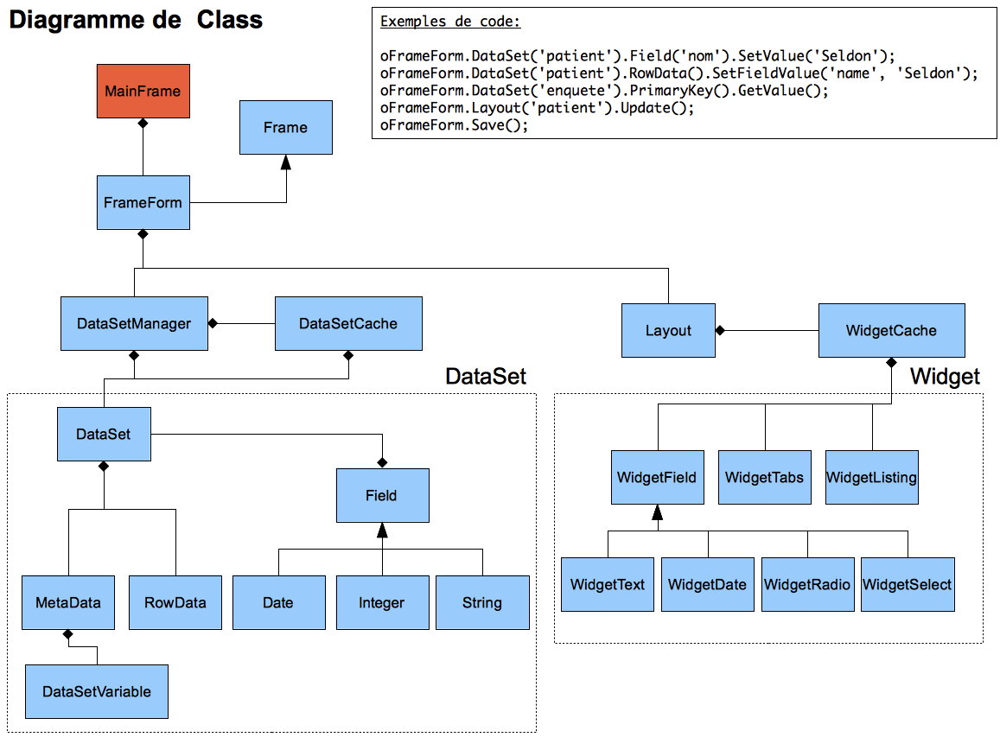
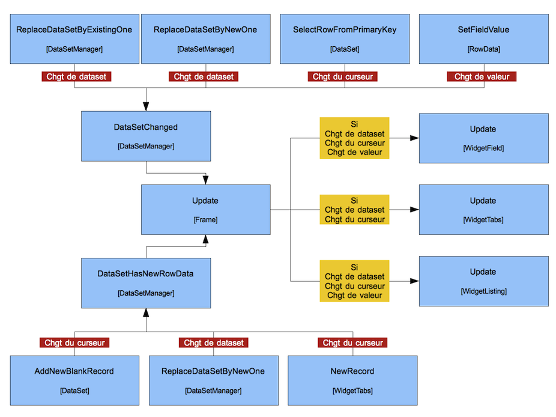

Librairie Javascript¶
Diagramme de class¶
Les événements¶
Flux¶
Liste de événements¶
- dataset:newRecord
- dataset:recordChanged
- datasetmanager:datasetChanged
- dataset:valueChanged
- datasetmanager:DatasetChanged
- dataset:newRecord
//dataset/dataset.js:
this.fire('dataset:newRecord', this);
//dataset/dataset.js:
this.fire('dataset:recordChanged', this);
//dataset/datasetmanager.js:
this.fire('datasetmanager:datasetChanged', oNewDataSet);
//dataset/rowdata.js:
oDataSet.fire('dataset:valueChanged', oDataSet, sFieldName, mValue);
//frame/frameform.js:
oDataSetManager.fire('datasetmanager:DatasetChanged', aDataSet['sDataSetId']);
//frame/layout/widget/widgettabs.js:
this.DataSet().fire('dataset:newRecord', this.DataSet());
Conditions d’affichage Javascript¶
Introduction¶
Le développement de “l’éditeur” Voozanoo4 a posé la problématique de condition d’affichage pour des blocs (groupes). Un système de conditions d’affichage est déjà en place dans le Core Voo4 mais se base sur des tables du projet :
- e5ib_query_data
- e5ib_queryvar_data
Or l’éditeur ne peut utiliser de tables proprent à un projet, vu qu’il est par définition “multi-projet”.
Un système de condition d’affichage basé sur Javascript à donc été implémenté au niveau du WidgetGroup (balise XML : <group></group>)
Fonctionnement¶
Le comportement d’affichage / masquage automatique est implémenté uniquement dans le WidgetGroup pour le moment. Pour l’activer il est necessaire de fournir l’option show_on ou hide_on au niveau du <group>.
Note
Comme le nom de l’option l’indique, l’option show_on fera s’afficher le bloc lorsque la condition est évaluée à true, et cachera le bloc dans le cas inverse.
L’option hide_on elle fera le contraire, elle cachera le bloc lorsque la condition est évaluée à true et l’affiche dans le cas contraire.
Important : Il n’est actuellement pas possible de spécifier les deux options en même temps, l’option show_on sera alors considérée comme prioritaire.
<group title="Informations complémentaires">
<option output="html" option_name="show_on" value="{project.strong_password} == 1" />
</group>
Note
Pour les variables de type dictionnaire il faut utiliser le code, exemple: {patient.sexe} = ‘m’
Pour les variable de type DICO_EXT ou SYSIDOC_EXT, c’est un tableau de code qui est renvoyé, exemple: {patient.traitement}.indexOf( ‘chimio’ ) != -1
La condition peut contenir de 0 à N variables (symbolisées par des accolades entourant l’id du DataSet et le nom du Champ : {dataset.field}). Il est impératif que le DataSet soit présent dans le
formulaire ainsi que le champ dans ce Dataset sans quoi une Exception sera lancée coté Js.
La logique de vérification syntaxique de la condition et d’execution de celle-ci est dans la classe Y.Helper.JsQuery (Voir documentation YUI de Voo4 pour plus d’informations sur les méthodes publiques)
Les méthodes ValueChangeEvent() et Update() anciennement non définies dans Y.WidgetGroup ont été codée pour executer la condition Javascript si besoin est (si une variable occasionnant l’appel de ValueChangeEvent() est dans la condition)
Warning
La condition étant exprimée dans le XML les caractères spéciaux ne peuvent pas être utilisés tel quel, il faut utiliser leur équivalent en “Entité HTML” :
| Caractère | Equivalent |
|---|---|
| & | & |
| && | && |
| < | < |
| > | > |
| <= | <= |
| >= | >= |
Exemple :
<!-- {patient.age} >= 18 && {patient.age} < 60 -->
<option output="html" option_name="show_on" value="{patient.age} >= 18 && {patient.age} < 60" />
Validateurs¶
Introduction¶
La notion de validateur peut être présente :
Elle permet de valider la valeur saisie par une utilisateur (coté client) dès sa saisie, puis de l’informer de l’éventuel échec de validation lors de la tentative de soumission du formulaire.
Structure¶
Les validateurs sont stockés dans VOOZANOO4/libs/VooLibJs/dataset/validator/ :
- Ils doivent tous hériter de
Y.Validator.Base(ou à défaut d’une classe enfant de cette classe). - Ils doivent tous être déclarés dans le namespace
Y.Validator
Le validateur Y.Validator.Regexp est particulier car il ne peut être utilisé en tant que validateur classique, il doit être :
- Etendu par une classe enfant
- Ou être utilisé via l’attribut
regexpcoté Xml
Les validateurs sont gérés par la classe Y.ValidatorMgr, cette classe gère l’instanciation à la volée du validateur demandé (si non instancié) et retourne l’objet représentant le validateur.
Il n’est pas necessaire d’instancier la classe Y.ValidatorMgr :
var oValidatorEmail = Y.ValidatorMgr.Validator('email'); //oValidatorEmail sera une instance de Y.Validator.Email
Y.Validator.Regexp¶
Ce validateur sera certainement la base de la plupart des validateurs développés prochainement. Il permet de valider la valeur fournie via une Expression régulière.
Outre son utilisation implicite lors de la présence de l’attribut regexp dans un Varset/DataQuery/DataSet il est interessant de noter les points à retenir en cas de création d’un validateur étendant celui-ci :
- Etendre le validateur
Y.Validator.Regexp: function ValidatorFoo() { ValidatorFoo.superclass.constructor.apply(this, arguments); } Y.namespace('Validator').Foo = Y.extend(ValidatorFoo, Y.Validator.Regexp, { }
- Etendre le validateur
- Définir l’expression régulière et optionnellement les Modifiers dans la méthode
initializer: initializer : function() { this.SetRegexp('^[0-9]{2}[a-z0-9._-]*$') .SetRegexpModifiers('i'); }
- Définir l’expression régulière et optionnellement les Modifiers dans la méthode
- Optionnellement redéfinir la méthode
IsValidValuepour retourner une hash d’erreur plus pertinent que le hashERROR_INVALID_SYNTAXretourné parY.Validator.Regexp: IsValidValue : function( mValue ) { //Call parent method (Y.Validator.Regexp.IsValidValue) var mResult = Y.Validator.Foo.superclass.IsValidValue.apply(this, arguments); if ( !( true === mResult ) ) //If validation failed { //Return proper error hash (and no error hash from parent class) return this.get('ERROR_INVALID_FOO'); } //Value was valid return true; }
- Optionnellement redéfinir la méthode
Validateurs disponibles¶
Les validateurs disponibles sont :
- email (
Y.Validator.Email) : étend le validateurY.Validator.Regexp
Futur
On pourrait imaginer des validateurs :
- num (Chiffres uniquement)
- alpha (Lettres uniquement)
- alnum (Lettres et chiffres uniquement)
- Etc...
Rendu spécifique au validateur¶
Un validateur peut necessiter
Code¶
Scope d’une fonction¶
Le code ci-dessous permet de définir le scope pour l’execution de la fonction passée en paramètre de setTimeout. Il ne serait pas possible de passer directement la fonction PingMonitor à setTimeout, car elle utilise this.
(function _scope(oWidgetGroup)
{
Y.log('Inside scope function');
var iSetTimeoutId = setTimeout(function()
{
Y.log('Inside set timeout!!');
oWidgetGroup.PingMonitor();
}, oWidgetGroup.get('iPingTimeOut'));
oWidgetGroup.set('iSetTimeoutId', iSetTimeoutId);
}(this));
Surcharge des objets Javascript natifs¶
Function¶
Fichier VOOZANOO4/libs/VooLibJs/prototype/Function.js.
- createDelegate(scope, additionalArgs, appendArgs) permettant l’exécution de la dite méthode dans un contexte différent en ajoutant/remplacant des arguments
Function.prototype.createDelegate = function(obj, args, appendArgs) {
var method = this;
return function() {
var callArgs = args || arguments;
if (appendArgs === true){
callArgs = Array.prototype.slice.call(arguments, 0);
callArgs = callArgs.concat(args);
}else if (YUI().Lang.isNumber(appendArgs)){
callArgs = Array.prototype.slice.call(arguments, 0); // copy arguments first
var applyArgs = [appendArgs, 0].concat(args); // create method call params
Array.prototype.splice.apply(callArgs, applyArgs); // splice them in
}
return method.apply(obj || window, callArgs);
};
};
//Objet Human
var Human = function(lastName, firstName)
{
this.lastName = lastName;
this.firstName = firstName;
}
//Fonction externe non liée à un objet
var fnTalk = function(toSay)
{
toSay = toSay || "";
alert("Bonjour, je m'appelle " + this.firstName + ". " + toSay);
}
//Instanciation de la calsse "Human" en passant le nom de famille et le prénom
var oGSA = new Human('Scandola', 'Guillaume');
//Execution de la fnTalk dans le context de oHuman
document.getElementById('btn').onclick = fnTalk.createDelegate(oGSA); //--> "Bonjour, je m'appelle Guillaume."
document.getElementById('btn').onclick = fnTalk.createDelegate(oGSA, ['Comment allez vous ?']); //-> "Bonjour, je m'appelle Guillaume. Comment allez vous ?"
//Plus interessant encore, createDelegate peut ajouter les arguments que vous lui donnez plutot que de remplacer ceux de base par les votres
//Imaginons lors du click du bouton le navigateur appelle la fonction définie en passant en premier argument l'évènement (position du click etc...)
//Le code :
document.getElementById('btn').onclick = fnTalk.createDelegate(oGSA, ['What else ?'], true);
//Permettra l'éxécution de la fonction fnTalk en passant en arguments : {Event}, {'What else ?'} le tout dans le contexte de GSA
String¶
Fichier VOOZANOO4/libs/VooLibJs/prototype/String.js.
- toBoolean() : Convertit la string en boolean (“false”, “f” ou “0” vaut false. Tout autre valeur vaut true)
var sFalsy = "false";
if ( true === sFalsy.toBoolean() )
{
alert('sFalsy vaut true'); //Ne se produira pas
}
else
{
alert('sFalsy vaut false'); //Se produira
}
Note
Particulièrement utile lorsqu’il s’agit de tester une valeur provenant d’un Xml, vu que tous les attributs sont “String”, cette méthode permet de tester des valeurs booléennes sans se soucier de la véritable valeur de l’attribut.
- pad(sString, iLength, sPadString, iPadType) : Similaire à la fonction str_pad de PHP, s’utilise de façon statique
var sText = 'Foo';
console.log( String.prototype.pad(sText, 5) ); // 'Foo '
console.log( String.prototype.pad(sText, 5, '.') ); // 'Foo..'
console.log( String.prototype.pad(sText, 5, '.', String.prototype.PAD_LEFT) ); // '..Foo'
- leftPad(sString, iLength, sPadString) : Alias pour appeler
pad()avec l’optionString.prototype.PAD_LEFT - rightPad(sString, iLength, sPadString) : Alias pour appeler
pad()avec l’optionString.prototype.PAD_RIGHT - ucFirst() : Retourne la string avec la première lettre en majuscule
var sFirstName = 'guillaume';
console.log( sFirstName.ucFirst() ); //Guillaume
Number¶
Idée : Mettre une vrai fonction d’arrondi, Math.round arrondissant à l’entier le plus proche
Inexistant pour le moment
Chemin: VOOZANOO4/libs/VooLibJs/prototype/Number.js
IFrame¶
Introduction¶
Une IFrame est utilisée pour pallier à un manque des requêtes XHR: dans le cas où une requête provoque des redirections il n’est pas possible de passer par une requête XHR (théoriquement les redirections ne seront pas prises en compte).
C’est dans ce contexte que les IFrames ont été intégrées à Voozanoo4.
Utilisation¶
Récapitulatif du processus
Lorsqu’il est nécessaire d’envoyer la requête, instancier un objet de type Y.IFrame.
Cela peut se faire dans un objet de type Y.Frame spécifique à la frame en cours.
var oIFrame = new Y.IFrame({
'sRedirectUrl' : 'https://....',
'sName': 'IFrame A'
});
Ensuite, il faut déclarer l’IFrame dans la frame via la méthode addIFrame.
Cela sera utile par la suite à la destruction de la frame (moment qui correpondra à la fin de la requête).
oFrame.addIFrame( oIFrame );
L’IFrame doit être supprimée lorsque tous les traitements ont été faits. Il faut quel le serveur renvoie le code javascript de destruction de la frame.
<!DOCTYPE html>
<html>
<head>
<script type="text/javascript">
for (sFrameId in window.parent.Y.Voozanoo.oMainFrame.get('oFrames'))
{
var aFrames = window.parent.Y.Voozanoo.oMainFrame.get('oFrames');
if ( aFrames[sFrameId].isIFrameExists( window.name ) )
{
aFrames[sFrameId].deleteIFrame( window.name );
break;
}
}
</script>
</head>
<body>
</body>
</html>
Méthodes disponibles dans la class Y.Frame:
- addIFrame : function( oFrame )
- deleteIFrame : function( sName )
- isIFrameExists : function( sName )
- getIFrame : function( sName )